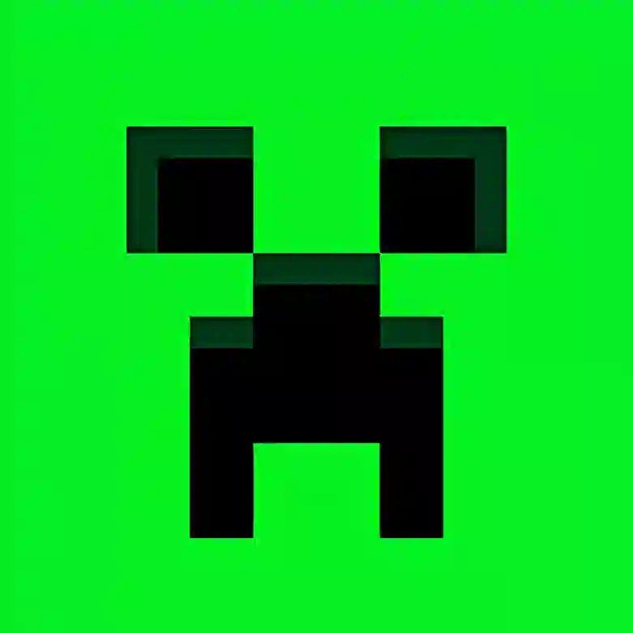

Turbolu StudiosProjelerimize göz atın!
TurboluMC
Java Edition Sunucumuz
AktifTurbolu Tıkla!
Mobil Tıklama Oyunu
AktifTurbolu Bedrock
Bedrock Edition Sunucumuz
AktifYeni Proje
Çok yakında...
YakındaHakkımızda
Turbolu Studios, yenilikçi ve eğlenceli dijital projeler geliştiren bağımsız bir stüdyodur. Minecraft sunucularından mobil oyunlara kadar geniş bir yelpazede çalışıyoruz. Amacımız, kullanıcılarımıza kaliteli, güvenli ve eğlenceli deneyimler sunmaktır.